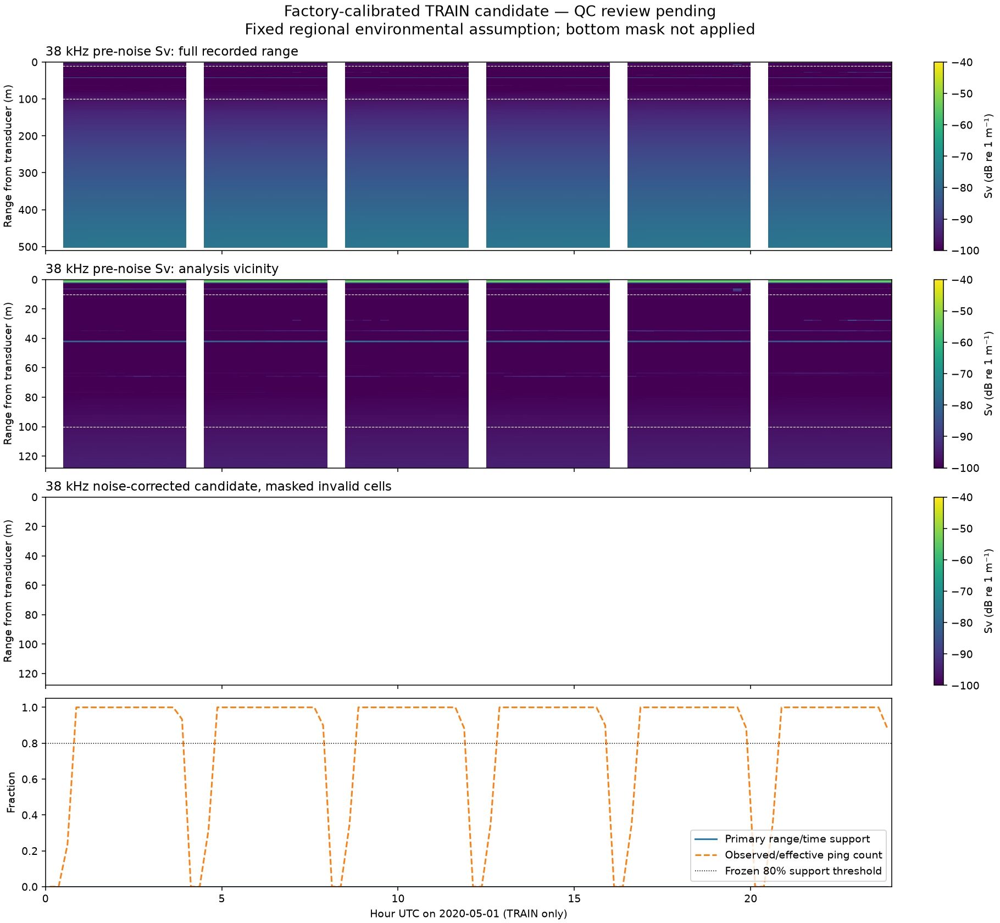

The complete predetermined day is shown, including its missing interval. No validation, interval-calibration or test acoustic values are displayed. This is a candidate, not an approved corpus or forecast result.
Expected acquisitions: 5760; observed: 4760; quarter-hours with at least80% primary support: 0/96. Support uses the larger of nominal expected and observed counts in each bin.

Physical method: serial55170 factory certificate; fixed TRAIN-derived temperature/salinity/pressure. Per-ping upstream background noise removal,10-sample range blocks,3dB SNR;10m proximal exclusion. Slant-range coordinates are not absolute depth. Partial saturation after onboard range averaging is unobservable. Bottom mask: NOT_APPLIED_BOTTOM_NOT_OBSERVED_OR_VALIDATED.
Reviewer must assess calibration, noise subtraction, geometry, any suspected bottom, gaps and whether additional prospective QC is required before corpus promotion. All source and code hashes are in processing_manifest.json.